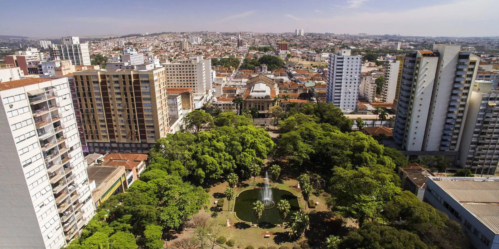
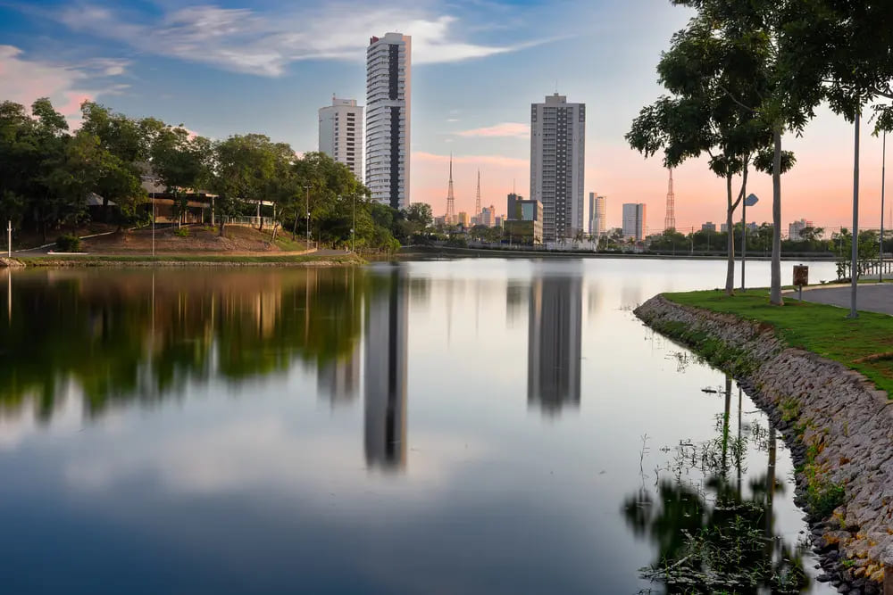
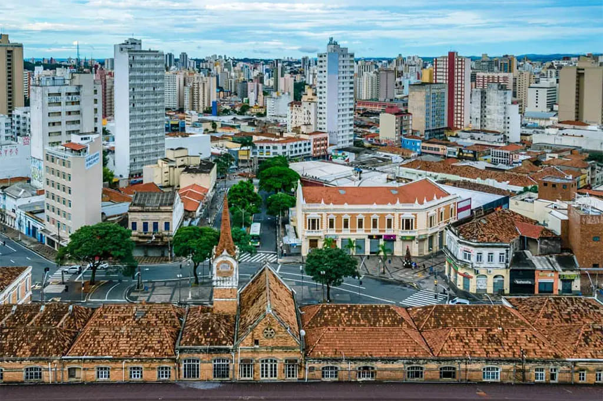
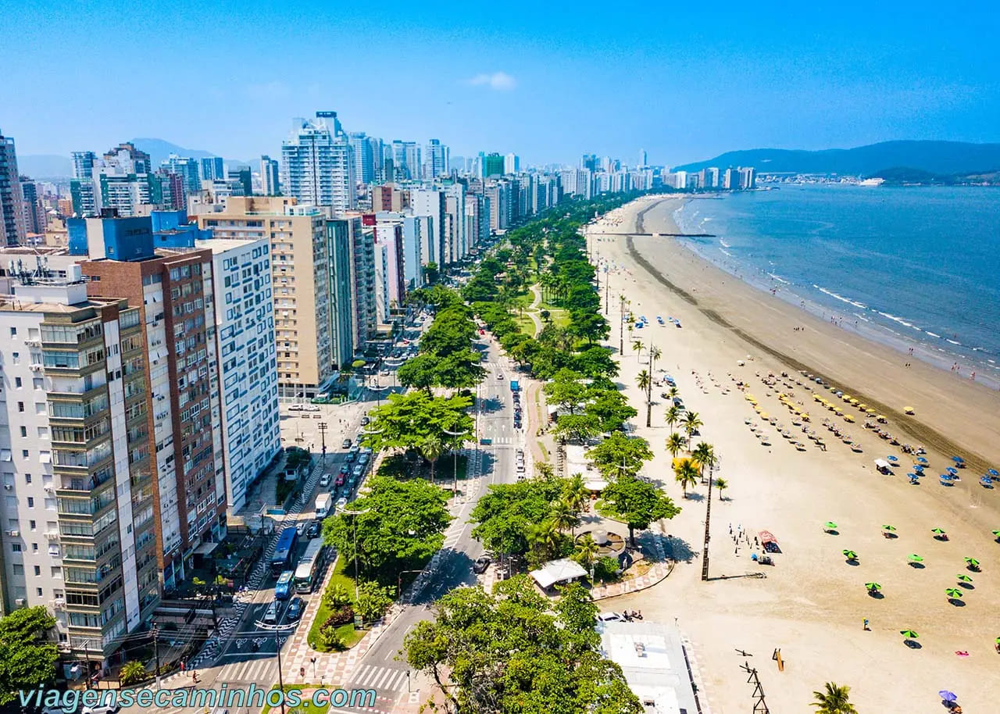
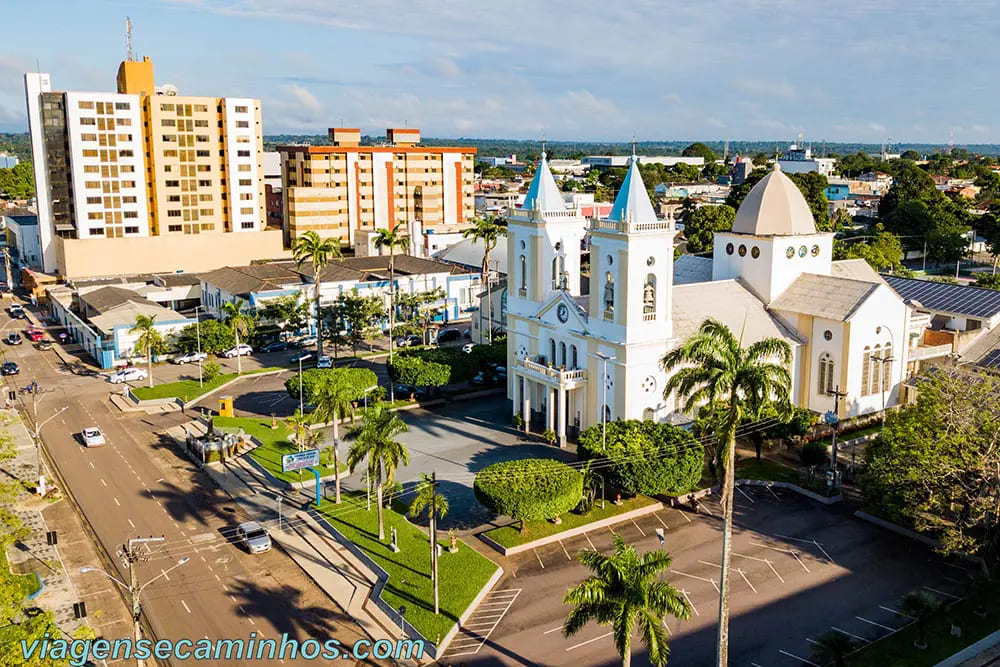

Apoie nossa Lista Etapa concluída
O prazo para apoiar a lista terminou em 3/10/2026. Obrigado a quem apoiou a nossa candidatura. Agora, siga para a próxima etapa.
Ver as orientações desta etapaFechar orientações
Para apoiar nossa candidatura, a assinatura precisa ser autenticada presencialmente no Consulado-Geral da Itália em São Paulo ou nos pontos da missão itinerante.
É preciso levar ao menos um dos seguintes documentos:
- RG com menos de 10 anos;
- Passaporte brasileiro válido;
- CNH modelo novo com menos de 10 anos;
- Algum documento italiano válido (Passaporto ou CIE).
Onde ir
Consulado-Geral da Itália em São Paulo
Av. Paulista, 1963 · Bela Vista
São Paulo · SP · 01311-300
Quando ir
Segunda a sexta: 13h às 16h
Sábados: 19 e 26 de setembro; 3 de outubro, das 10h às 13h.
Horários extraordinários publicados pelo Consulado em 11/09/2026.
Quem procurar
Antes de sair, fale com a Central da Campanha pelo (11) 99709-0665 para combinar a orientação da DIB no local e confirmar a programação do encontro.
Falar com a Central ↗Missões itinerantes
Assinatura e autenticação da lista também nestes locais:

16/09 · 10h às 13h
Ribeirão Preto (SP)
Sede do Vice-Consulado Honorário
Rua Itacolomi, 484
CEP 14025-250

18/09 · 9h às 12h
Cuiabá (MT)
Sede do Vice-Consulado Honorário
Travessa Chamal, Lote 8, Quadra 10
Bairro Jardim Bom Clima · CEP 78048-237

22/09 · 10h às 13h
Campinas (SP)
Sede do Consulado Honorário
Av. Barão de Itapura, 2310
Guanabara

24/09 · 10h às 13h
Santos (SP)
Sede do Vice-Consulado Honorário
Alameda Armênio Mendes, 66
Conj. 2501

25/09 · 10h às 13h
Porto Velho (RO)
Sede do Vice-Consulado Honorário
Rua Duque de Caxias, 590
Locais e horários publicados pelo Consulado-Geral da Itália em São Paulo em 11/09/2026.